BRMS hierarchical model sandbox FRAP
06_24_19
This is an R Markdown Notebook. When you execute code within the notebook, the results appear beneath the code.
Try executing this chunk by clicking the Run button within the chunk or by placing your cursor inside it and pressing Cmd+Shift+Enter.
library(nlme)
fm1 <- nlme(height ~ SSasymp(age, Asym, R0, lrc),
data = Loblolly,
fixed = Asym + R0 + lrc ~ 1,
random = Asym ~ 1,
start = c(Asym = 103, R0 = -8.5, lrc = -3.3))
summary(fm1)
fm2 <- update(fm1, random = pdDiag(Asym + lrc ~ 1))
summary(fm2)library(brms)## Loading required package: Rcpp## Loading 'brms' package (version 2.9.0). Useful instructions
## can be found by typing help('brms'). A more detailed introduction
## to the package is available through vignette('brms_overview').library(tidyverse)## ── Attaching packages ─────────────────────────────────────────────────────────────────────────────────────────────────────────────────────────────────────────────────────────────────────── tidyverse 1.2.1 ──## ✔ ggplot2 3.2.0 ✔ purrr 0.2.5
## ✔ tibble 2.1.3 ✔ dplyr 0.8.1
## ✔ tidyr 0.8.2 ✔ stringr 1.3.1
## ✔ readr 1.3.1 ✔ forcats 0.3.0## ── Conflicts ────────────────────────────────────────────────────────────────────────────────────────────────────────────────────────────────────────────────────────────────────────── tidyverse_conflicts() ──
## ✖ dplyr::filter() masks stats::filter()
## ✖ dplyr::lag() masks stats::lag()df <- tibble(x = c(rnorm(100,mean = seq(1,100,1)), rnorm(100,mean = seq(1,100,1)), rnorm(100,mean = seq(1,100,1))), y = c(rnorm(100,mean = seq(1,100,1)), rnorm(100,mean = seq(1,200,2)), rnorm(100,mean = seq(1,300,3))), id = c(rep('a',100),rep('b',100),rep('c',100)))
ggplot(df, aes(x,y,color = id)) + geom_point()+ geom_smooth(method = 'lm') + facet_grid(~id)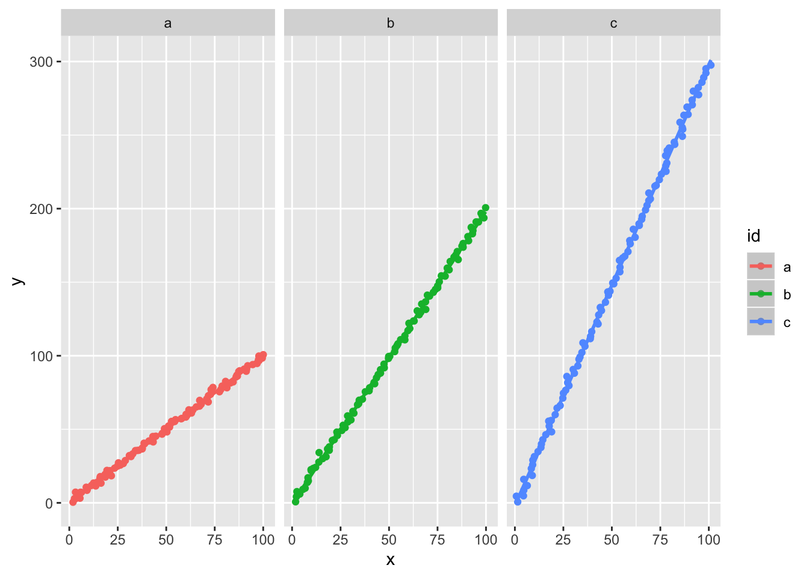
model_1 <- brm(y ~ x + 1 + (1|id), data = df, warmup = 1000, iter = 3000, chains = 2, inits= "random", cores=2)
summary(model_1)
marginal_effects(model_1)
me_loss_1 <- marginal_effects(
model_1, conditions = data.frame(id = c('a','b','c')),
re_formula = NULL, method = "predict"
)
plot(me_loss_1, plot = F, points = T)[[1]] + ggtitle("My custom ggplot here!")model_2 <- brm(y ~ x + 1 + (x+1|id), data = df, warmup = 1000, iter = 3000, chains = 2, inits= "random", cores=2)
summary(model_2)
marginal_effects(model_2)
me_loss_2 <- marginal_effects(
model_2, conditions = data.frame(id = c('a','b','c')),
re_formula = NULL, method = "predict"
)
plot(me_loss_2, plot = F, points = T)[[1]] + ggtitle("My custom ggplot here!")model_3 <- brm(y ~ x + 1 + (x|id), data = df, warmup = 1000, iter = 3000, chains = 2, inits= "random", cores=2)
summary(model_3)
marginal_effects(model_3)
me_loss_3 <- marginal_effects(
model_3, conditions = data.frame(id = c('a','b','c')),
re_formula = NULL, method = "predict"
)
plot(me_loss_3, plot = F, points = T)[[1]] + ggtitle("My custom ggplot here!")df <- read_csv("06_13_19_PYO_FRAP_glycerol_full_norm.csv") ## Parsed with column specification:
## cols(
## .default = col_double(),
## filename = col_character(),
## condition = col_character(),
## agarose = col_character(),
## PYO = col_character(),
## objective = col_character(),
## frames = col_character(),
## excitation = col_character(),
## bleach = col_character(),
## fast = col_character()
## )## See spec(...) for full column specifications.df_fast_1 <- df %>% filter(fast == 'repFAST' & id==1)
df_fast <- df %>% filter(fast == 'repFAST')
ggplot(df_fast_1, aes(x = norm_time, y = full_norm_int, color = condition)) +
geom_point(shape = 21)+
scale_color_viridis_d() +
facet_wrap(~condition)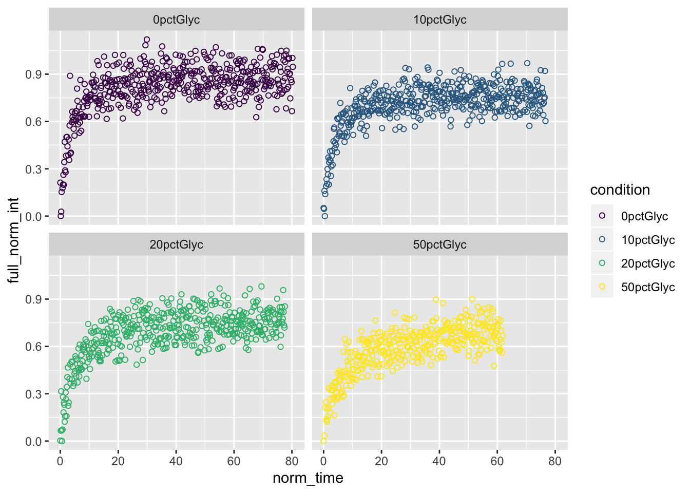
prior1 <- prior(normal(0.8, 0.2), nlpar = "I0") +
prior(normal(0.6, 0.2), nlpar = "a")+
prior(normal(0.2, 0.1), nlpar = "B")
frap_model_1 <- brm(bf(full_norm_int~I0 - a*exp(-B * norm_time), I0 + a + B~1+(1|condition), nl = T),
data = df_fast_1,
prior = prior1,
chains = 2,
cores = 2,
iter = 500
)
summary(frap_model_1)
marginal_effects(frap_model_1)
me_frap_model_1 <- marginal_effects(
frap_model_1, conditions = data.frame(condition = c('0pctGlyc','10pctGlyc','20pctGlyc','50pctGlyc')),
re_formula = NULL, method = "predict"
)
plot(me_frap_model_1, plot = F, points = T)[[1]] + ggtitle("My custom ggplot here!")frap_model_2 <- brm(bf(full_norm_int~I0 - a*exp(-B * norm_time), I0 + a + B~1+(1|condition), nl = T),
data = df_fast_1,
prior = prior1,
chains = 4,
cores = 2
)
summary(frap_model_2)
marginal_effects(frap_model_2)
me_frap_model_2 <- marginal_effects(
frap_model_2, conditions = data.frame(condition = c('0pctGlyc','10pctGlyc','20pctGlyc','50pctGlyc')),
re_formula = NULL, method = "predict"
)
plot(me_frap_model_2, plot = F, points = T)[[1]] + ggtitle("My custom ggplot here!")
plot(frap_model_2)Can we set a group level parameter that doesn’t have a hyperparameter by doing:
#leave out intercept in parameter specification. Only depends on group level intercept?...
frap_model_3 <- brm(bf(full_norm_int~I0 - a*exp(-B * norm_time), I0 + a + B~(1|condition), nl = T),
data = df_fast_1,
prior = prior1,
chains = 4,
cores = 2
)
summary(frap_model_3)
marginal_effects(frap_model_3)
me_frap_model_3 <- marginal_effects(
frap_model_3, conditions = data.frame(condition = c('0pctGlyc','10pctGlyc','20pctGlyc','50pctGlyc')),
re_formula = NULL, method = "predict"
)
plot(me_frap_model_3, plot = F, points = T)[[1]] + ggtitle("My custom ggplot here!")
plot(frap_model_3)Prior predictive check:
prior1 <- prior(normal(0.8, 0.2), nlpar = "I0") +
prior(normal(0.6, 0.2), nlpar = "a")+
prior(normal(0.2, 0.1), nlpar = "B")
frap_prior_pc <- brm(bf(full_norm_int~I0 - a*exp(-B * norm_time), I0 + a + B~(1|condition), nl = T),
data = df_fast_1,
prior = prior1,
chains = 4,
cores = 2,
iter = 500,
sample_prior = 'only'
)
plot(frap_prior_pc, N = 3)Really what we want is to have each condition in its own hierarchical model, then we compare the hyperparameter estimates from each hierarchy to compare the conditions. This is because we don’t think there’s a true hyperparameter that controls the FRAPS in the different conditions…but there should be ones among the replicates
frap_model_0pct <- brm(bf(full_norm_int~I0 - a*exp(-B * norm_time), I0 + a + B~1+(1|id), nl = T),
data = df_fast %>% filter(condition== '0pctGlyc'),
prior = prior1,
chains = 4,
cores = 2,
control = list(adapt_delta = 0.95, max_treedepth = 15)
)
marginal_effects(frap_model_0pct)
me_frap_model_0pct <- marginal_effects(
frap_model_0pct, conditions = data.frame(id = c(1,2,3)),
re_formula = NULL, method = "predict"
)
plot(me_frap_model_0pct, plot = F, points = T)[[1]] + ggtitle("My custom ggplot here!") + ylim(-2,2)
plot(frap_model_0pct, N = 3)frap_model_10pct <- brm(bf(full_norm_int~I0 - a*exp(-B * norm_time), I0 + a + B~1+(1|id), nl = T),
data = df_fast %>% filter(condition== '10pctGlyc'),
prior = prior1,
chains = 4,
cores = 2,
control = list(adapt_delta = 0.9, max_treedepth = 12)
)
summary(frap_model_0pct)
summary(frap_model_10pct)
me_frap_model_10pct <- marginal_effects(
frap_model_10pct, conditions = data.frame(id = c(1,2,3)),
re_formula = NULL, method = "predict"
)
plot(me_frap_model_10pct, plot = F, points = T)[[1]] + ggtitle("My custom ggplot here!") + ylim(-2,2)
plot(frap_model_10pct, N = 3)For some reason I started with 20 percent glycerol. After a lot of troubleshooting, going back and fitting a single curve changing priors etc, I think the main issue was that I needed to set the lower bound (lb) for the priors to zero to avoid getting negative parameter values…now the model seems to be working pretty well and giving reasonable parameter estimates:
Let’s walk through what worked here.
First, the models were running very slowly…because this is essentially controlling stan that could be for a lot of reasons. The internet suggested two specific commands to speed up performance in rstan:
library(rstan)## Loading required package: StanHeaders## rstan (Version 2.18.2, GitRev: 2e1f913d3ca3)## For execution on a local, multicore CPU with excess RAM we recommend calling
## options(mc.cores = parallel::detectCores()).
## To avoid recompilation of unchanged Stan programs, we recommend calling
## rstan_options(auto_write = TRUE)##
## Attaching package: 'rstan'## The following object is masked from 'package:tidyr':
##
## extractrstan_options(auto_write = TRUE)
options(mc.cores = parallel::detectCores())Next, I played around with the priors a good bit, since I had the estimates from the nls fits. We could make these more weakly informative, but comparing to the posterior shows that I think the data informed the model pretty well:
prior20 <- prior(normal(0.75, 0.2), nlpar = "I0", lb = 0) +
prior(normal(0.6, 0.1), nlpar = "a", lb = 0)+
prior(normal(0.15, 0.05), nlpar = "B", lb = 0)The nice thing is that this syntax is actually really straightforward and similar to how Justin Bois taught us to write out priors and models…Note that there are some parameters / priors that are sort of implied and not explicit (e.g. sigma for gaussian process?), but the core of it is that my model has three nonlinear parameters and we specify a simple prior for each one.
Finally, we can actually call the brm function which writes the stan file / model compiles (in C++) and runs the model we write. Note that this command will take a while to run (but significantly faster than before) - I think it was less than 10 min. It is definitely worth starting on a smaller dataset with fewer chains and iterations when trying to get the model up and running well. Also, note that there is a file option to save the model / run in an external file for later use (either with ‘file’ parameter or with save command):
frap_model_20pct <- brm(bf(full_norm_int~I0 - a*exp(-B * norm_time), I0 + a + B~1+(1|id), nl = T),
data = df_fast %>% filter(condition== '20pctGlyc'),
prior = prior20,
chains = 4,
cores = 2,
iter = 2000,
inits = '0',
control = list(adapt_delta = 0.99, max_treedepth = 20)
)
save(frap_model_20pct, file = "frap_20pct_hier_fit_1.rda")This should produce some helpful status updates about how the chains are running and how long it takes…and probably some warnings about divergences or more serious problems (e.g. uninformative chains).
Next, I think the first thing to do is look at the summary of the run:
load("frap_20pct_hier_fit_1.rda")
summary(frap_model_20pct)## Warning: There were 20 divergent transitions after warmup. Increasing adapt_delta above 0.99 may help.
## See http://mc-stan.org/misc/warnings.html#divergent-transitions-after-warmup## Family: gaussian
## Links: mu = identity; sigma = identity
## Formula: full_norm_int ~ I0 - a * exp(-B * norm_time)
## I0 ~ 1 + (1 | id)
## a ~ 1 + (1 | id)
## B ~ 1 + (1 | id)
## Data: df_fast %>% filter(condition == "20pctGlyc") (Number of observations: 1440)
## Samples: 4 chains, each with iter = 2000; warmup = 1000; thin = 1;
## total post-warmup samples = 4000
##
## Group-Level Effects:
## ~id (Number of levels: 3)
## Estimate Est.Error l-95% CI u-95% CI Eff.Sample Rhat
## sd(I0_Intercept) 0.05 0.07 0.01 0.25 815 1.01
## sd(a_Intercept) 0.10 0.12 0.01 0.42 1794 1.00
## sd(B_Intercept) 0.02 0.05 0.00 0.12 734 1.00
##
## Population-Level Effects:
## Estimate Est.Error l-95% CI u-95% CI Eff.Sample Rhat
## I0_Intercept 0.73 0.03 0.66 0.80 714 1.00
## a_Intercept 0.58 0.05 0.48 0.69 1750 1.00
## B_Intercept 0.13 0.02 0.10 0.17 742 1.00
##
## Family Specific Parameters:
## Estimate Est.Error l-95% CI u-95% CI Eff.Sample Rhat
## sigma 0.09 0.00 0.08 0.09 3684 1.00
##
## Samples were drawn using sampling(NUTS). For each parameter, Eff.Sample
## is a crude measure of effective sample size, and Rhat is the potential
## scale reduction factor on split chains (at convergence, Rhat = 1).Here you can see some really nice information. First, there are notable warnings about the run - here we had a few divergences, which is not that serious, but these warnings can be very helpful for more serious problems. Next brms tells us the full formula of the model we specified - Note that there is some shorthand to how the parameters / grouping can be specified, so this let’s you make sure you’re on the same page with the brms formula parsing.
Next there are three groups of effects: group-level effects, population level effects and family specific effects.
Let’s start with the ‘Population-Level’ - these are the hyperparameters, brms just uses a slightly different terminology to refer to them. For each parameter you can see the estimate, confidence interval, effective samples (may be much lower than you think!) and Rhat (diagnostic of convergence). These parameter estimates look great! They have lots of effective samples, nice convergence and reasonable confidence intervals / estimates.
Then we have the ‘Group-Level’ - these are parameters in the hierarchy that connect the hyperparameters to the group specific subset of that parameter. Therefore these are all the standard deviations of the group parameters from the population parameters. It does seem kinda weird to me that the actual parameters (not just sd) for each group are not reported, but the model definitely has that information as we will see below (although I need to figure out how to extract this in table form).
Lastly we have the ‘family specific’ parameter sigma. The family of this model is gaussian (by default). I interpret that to mean that a gaussian process / model describes the actual datapoints connecting them to the specified mathematical model. From JB’s class, we would explicity write this out and give it priors etc, but here I think it’s implicit and it essentially uses a single sigma to describe the noise in all the data (no hierarchy).
Now that we sort of understand the ideal output from the model, let’s look at the diagnostics that further help us decide whether this run was totally nonsensical or actually useful. Below are the traceplots for each chain as well as the histogram of parameter values from the samples along those chains.
plot(frap_model_20pct, N = 3, ask = F)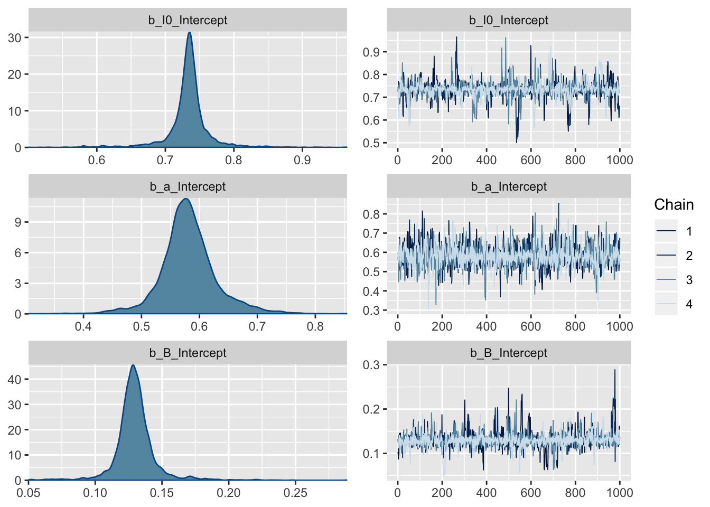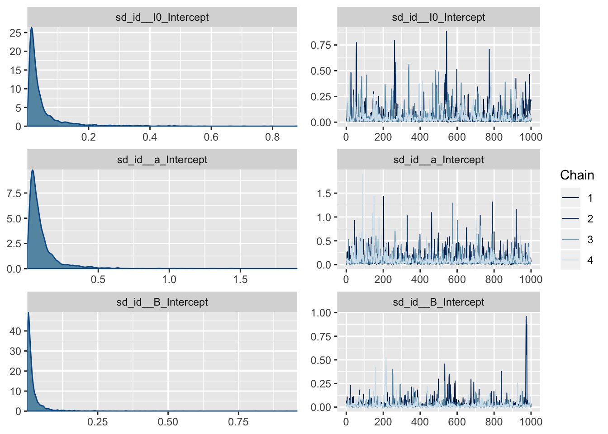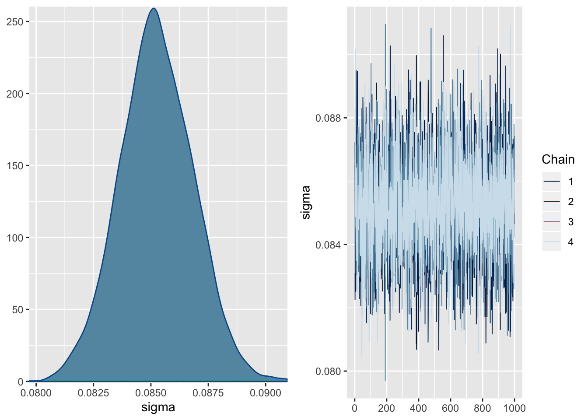
So these traceplots look beautiful and is what we want to see. The 4 chains are very well mixed - they have converged on similar values. All of the chains are moving - they are not stuck, and so the samples coming from the chains are relatively independent (important for getting “effective samples”). You can see that the estimates for sd at the group level have kinda wide distributions, but the “samples” for these parameters are only the three replicate frap curves, this also probably effects the confidence of the hyperparameters we care about. On the other hand you can see the sigma estimates are extremely tight, which likely comes from the high number of datapoints that this parameter is estimated on (~400 datapoints per replicate X 3 reps).
You can also compare these parameter distributions (for a, B and I0) to the priors we set. You can see that they have all shifted at least some, with a and B shifting significantly. That’s good, because it should mean that the data really did inform the posterior distribution and we’re not just getting back our prior. There should be a way to overlay the priors and posteriors, but we’ll save that for another time.
Also note, that we can do a prior predictive check with brm
Finally, we can actually visualize the model fits for each group within our hierarchy. I believe the best fit line is just the median sampled value for each parameter and the shaded area is the 95% confidence interval for the data points?
First here’s the actual parameter estimates for each replicate (group)!
frap_model_20pct_table <- coef(frap_model_20pct, summary = T, robust = T)
frap_model_20pct_table## $id
## , , I0_Intercept
##
## Estimate Est.Error Q2.5 Q97.5
## 1 0.7453687 0.004986916 0.7359148 0.7550766
## 2 0.7372406 0.004737759 0.7281110 0.7463463
## 3 0.7222025 0.004987149 0.7123059 0.7325901
##
## , , a_Intercept
##
## Estimate Est.Error Q2.5 Q97.5
## 1 0.6123333 0.02460473 0.5677048 0.6593948
## 2 0.5721523 0.02244596 0.5284341 0.6189857
## 3 0.5418665 0.02405789 0.4946067 0.5869938
##
## , , B_Intercept
##
## Estimate Est.Error Q2.5 Q97.5
## 1 0.1289537 0.007316051 0.1146116 0.1451590
## 2 0.1297877 0.007829621 0.1148376 0.1488467
## 3 0.1271142 0.008011565 0.1095685 0.1439614Now we can visualize those estimates with our data:
me_frap_model_20pct <- marginal_effects(
frap_model_20pct,
conditions = data.frame(id = c(1,2,3)),
re_formula = NULL, method = "predict"
)
plot(me_frap_model_20pct, points = T )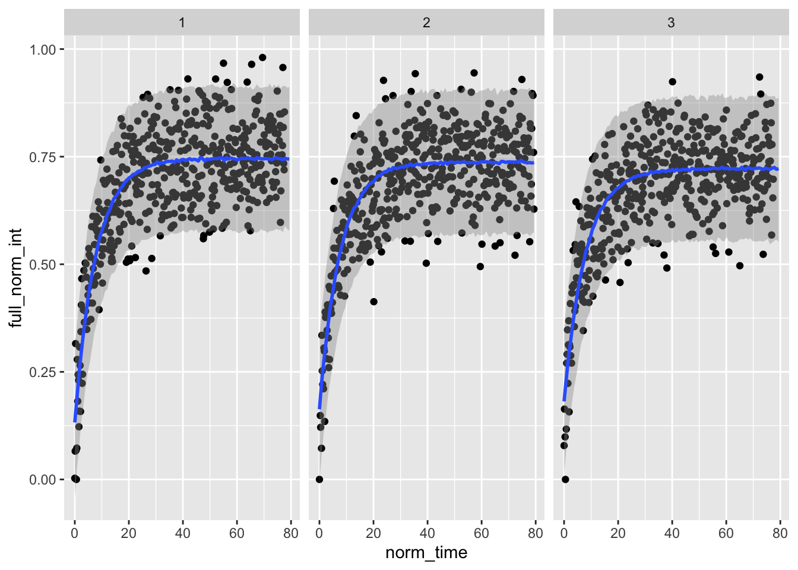
These fits look great! You can see that there are differences between the three replicates - especially obvious in I0 (the recovery baseline value). We can also see the individual estimates for within the groups. For some reason brms calls all of this “marginal effects” which I find somewhat confusing…but it seems to work in a reasonable manner.
We can also do more stuff like from JBs class like look at the pairs plots for the different parameters:
pairs(frap_model_20pct,pars = c('b_I0_Intercept','b_a_Intercept','b_B_Intercept'))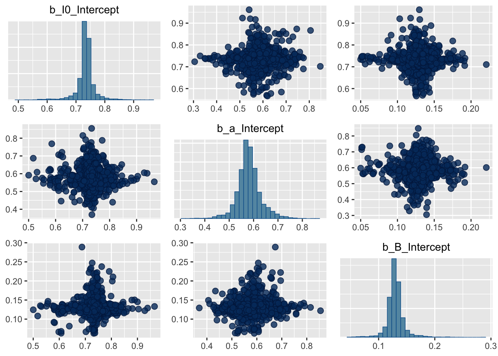
Ok! Now let’s move forward and try to run models for our four glycerol FRAP conditions and compare the parameter estimates. For now I’ll only work with the ‘FAST’ dataset, because from the nls fits it seemed more informative…maybe we’ll go back and try to fit the fast and slow acquisitions as part of the same hierarchy and see how it looks.
0 % Glycerol
frap_model_0pct <- brm(bf(full_norm_int~I0 - a*exp(-B * norm_time), I0 + a + B~1+(1|id), nl = T),
data = df_fast %>% filter(condition== '0pctGlyc'),
prior = prior20,
chains = 4,
cores = 2,
iter = 2000,
inits = '0',
control = list(adapt_delta = 0.99, max_treedepth = 20)
)
save(frap_model_0pct, file = "frap_0pct_hier_fit_1.rda")load("frap_0pct_hier_fit_1.rda")
summary(frap_model_0pct)## Warning: There were 8 divergent transitions after warmup. Increasing adapt_delta above 0.99 may help.
## See http://mc-stan.org/misc/warnings.html#divergent-transitions-after-warmup## Family: gaussian
## Links: mu = identity; sigma = identity
## Formula: full_norm_int ~ I0 - a * exp(-B * norm_time)
## I0 ~ 1 + (1 | id)
## a ~ 1 + (1 | id)
## B ~ 1 + (1 | id)
## Data: df_fast %>% filter(condition == "0pctGlyc") (Number of observations: 1440)
## Samples: 4 chains, each with iter = 2000; warmup = 1000; thin = 1;
## total post-warmup samples = 4000
##
## Group-Level Effects:
## ~id (Number of levels: 3)
## Estimate Est.Error l-95% CI u-95% CI Eff.Sample Rhat
## sd(I0_Intercept) 0.16 0.15 0.04 0.59 1084 1.00
## sd(a_Intercept) 0.08 0.13 0.00 0.40 1200 1.00
## sd(B_Intercept) 0.04 0.07 0.00 0.19 846 1.01
##
## Population-Level Effects:
## Estimate Est.Error l-95% CI u-95% CI Eff.Sample Rhat
## I0_Intercept 0.79 0.08 0.60 0.96 1128 1.00
## a_Intercept 0.69 0.05 0.57 0.76 1017 1.00
## B_Intercept 0.20 0.02 0.13 0.23 610 1.01
##
## Family Specific Parameters:
## Estimate Est.Error l-95% CI u-95% CI Eff.Sample Rhat
## sigma 0.09 0.00 0.09 0.10 3890 1.00
##
## Samples were drawn using sampling(NUTS). For each parameter, Eff.Sample
## is a crude measure of effective sample size, and Rhat is the potential
## scale reduction factor on split chains (at convergence, Rhat = 1).plot(frap_model_0pct, N = 3, ask = F)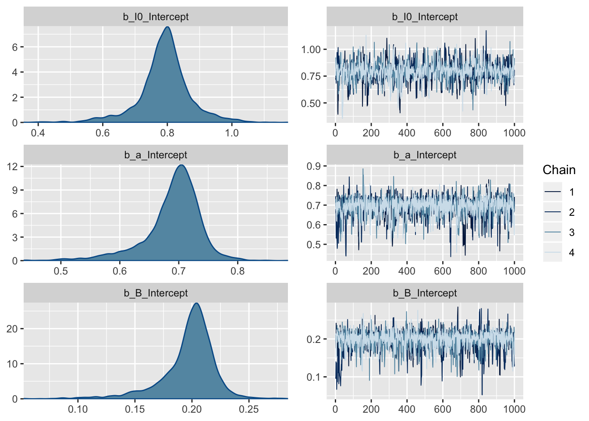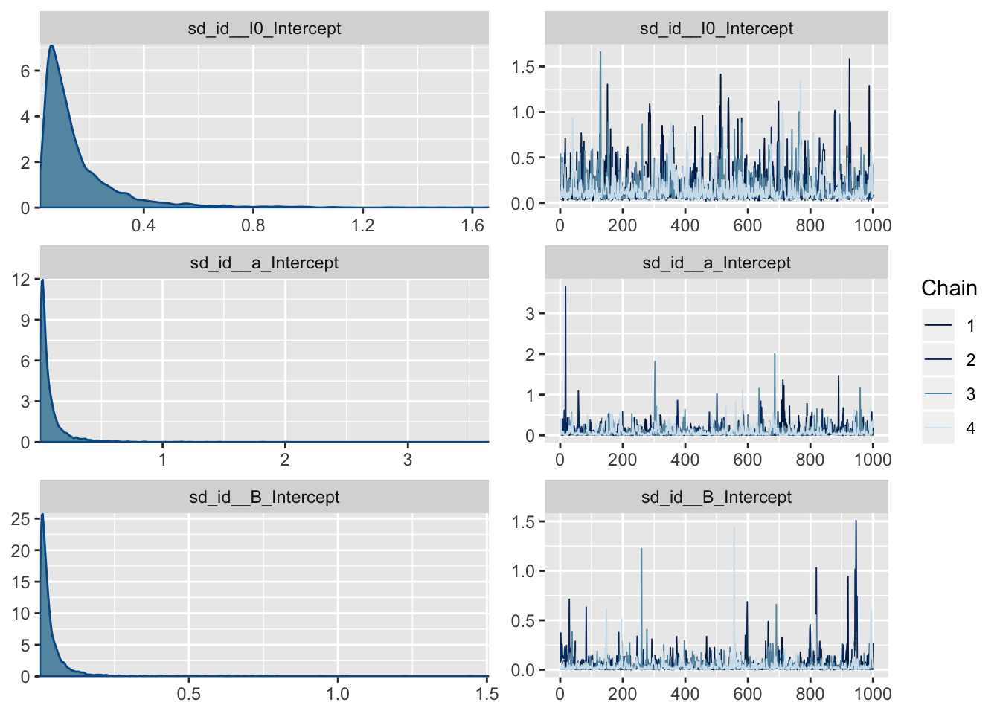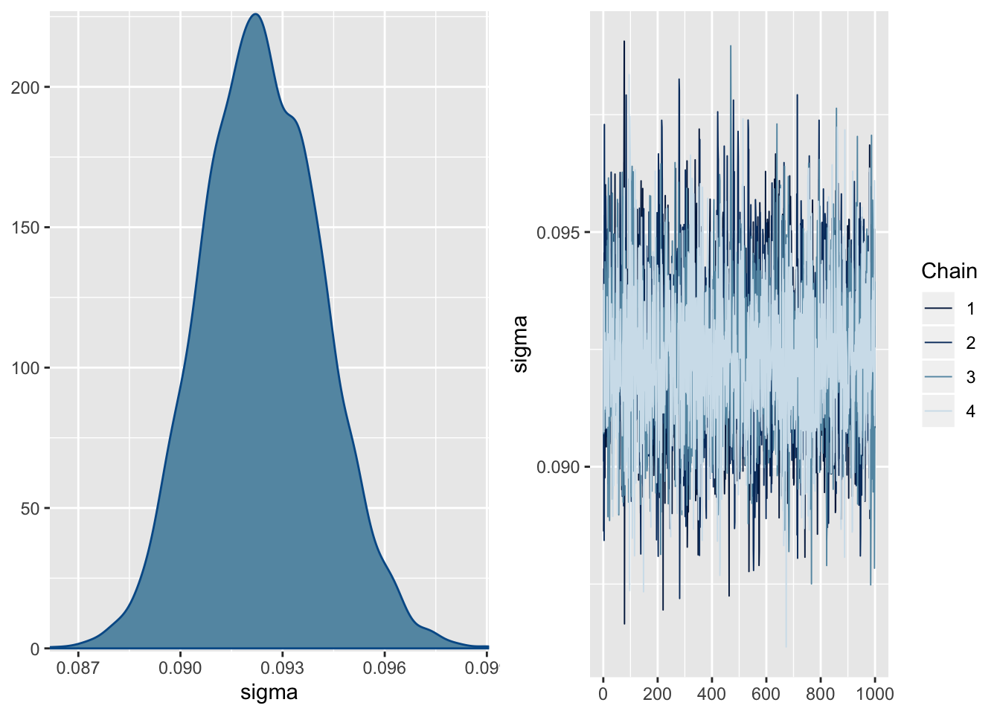
me_frap_model_0pct <- marginal_effects(
frap_model_0pct,
conditions = data.frame(id = c(1,2,3)),
re_formula = NULL, method = "predict"
)
plot(me_frap_model_0pct, points = T )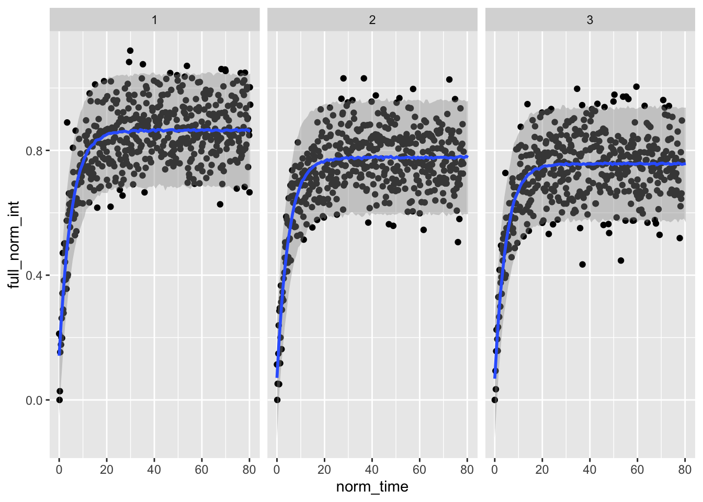
Beautiful!
10% Glycerol
frap_model_10pct <- brm(bf(full_norm_int~I0 - a*exp(-B * norm_time), I0 + a + B~1+(1|id), nl = T),
data = df_fast %>% filter(condition== '10pctGlyc'),
prior = prior20,
chains = 4,
cores = 2,
iter = 2000,
inits = '0',
control = list(adapt_delta = 0.99, max_treedepth = 20)
)
save(frap_model_10pct, file = "frap_10pct_hier_fit_1.rda")load("frap_10pct_hier_fit_1.rda")
summary(frap_model_10pct)## Warning: There were 11 divergent transitions after warmup. Increasing adapt_delta above 0.99 may help.
## See http://mc-stan.org/misc/warnings.html#divergent-transitions-after-warmup## Family: gaussian
## Links: mu = identity; sigma = identity
## Formula: full_norm_int ~ I0 - a * exp(-B * norm_time)
## I0 ~ 1 + (1 | id)
## a ~ 1 + (1 | id)
## B ~ 1 + (1 | id)
## Data: df_fast %>% filter(condition == "10pctGlyc") (Number of observations: 1440)
## Samples: 4 chains, each with iter = 2000; warmup = 1000; thin = 1;
## total post-warmup samples = 4000
##
## Group-Level Effects:
## ~id (Number of levels: 3)
## Estimate Est.Error l-95% CI u-95% CI Eff.Sample Rhat
## sd(I0_Intercept) 0.06 0.10 0.01 0.32 629 1.00
## sd(a_Intercept) 0.05 0.09 0.00 0.26 1104 1.00
## sd(B_Intercept) 0.04 0.07 0.00 0.19 1414 1.00
##
## Population-Level Effects:
## Estimate Est.Error l-95% CI u-95% CI Eff.Sample Rhat
## I0_Intercept 0.75 0.05 0.66 0.84 630 1.01
## a_Intercept 0.63 0.04 0.54 0.69 832 1.00
## B_Intercept 0.17 0.02 0.11 0.21 1143 1.00
##
## Family Specific Parameters:
## Estimate Est.Error l-95% CI u-95% CI Eff.Sample Rhat
## sigma 0.09 0.00 0.08 0.09 4118 1.00
##
## Samples were drawn using sampling(NUTS). For each parameter, Eff.Sample
## is a crude measure of effective sample size, and Rhat is the potential
## scale reduction factor on split chains (at convergence, Rhat = 1).plot(frap_model_10pct, N = 3, ask = F)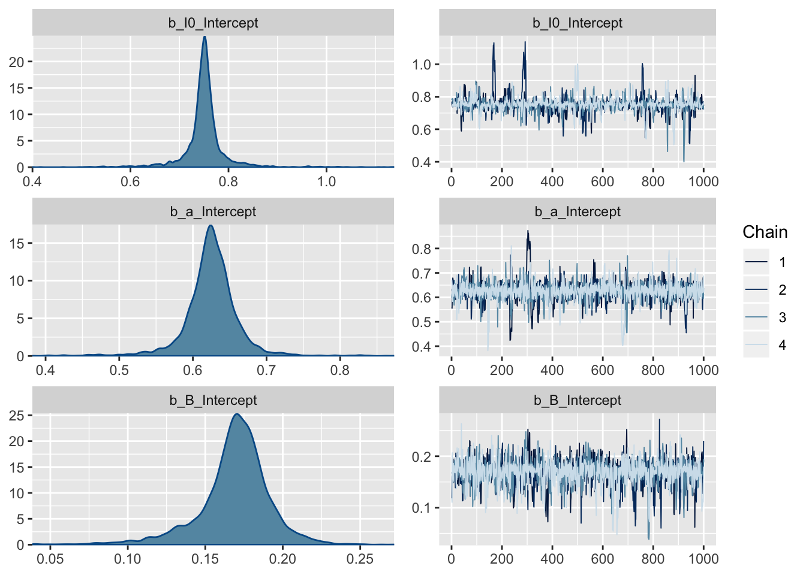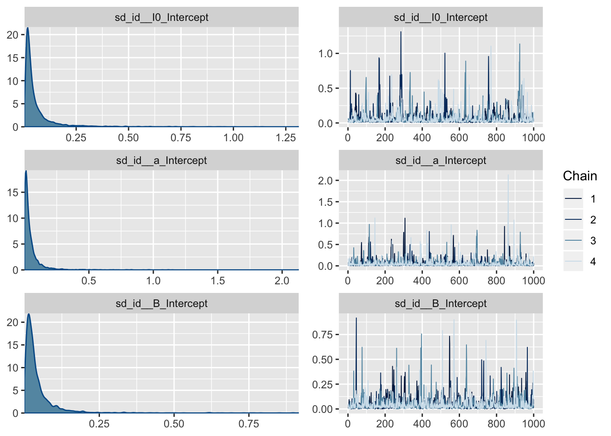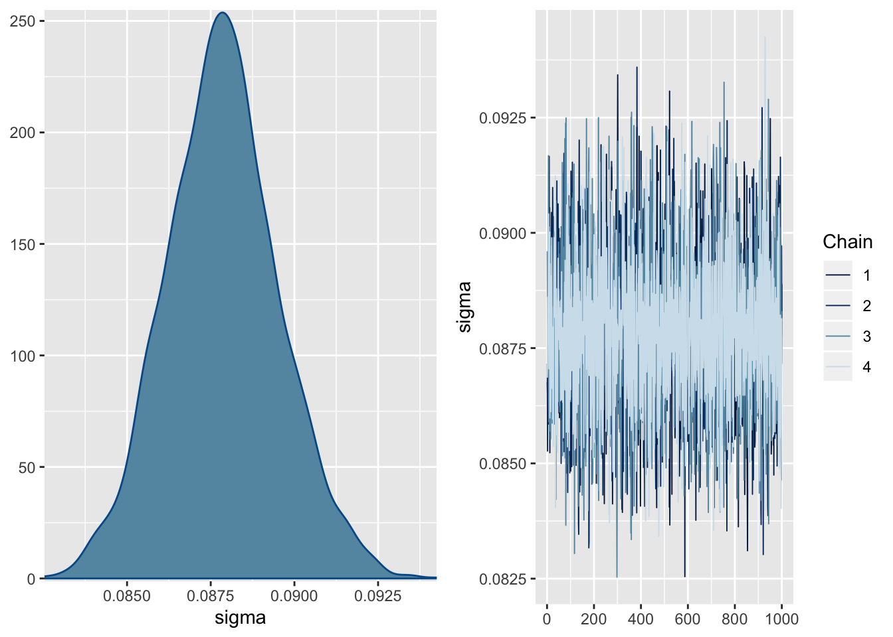
me_frap_model_10pct <- marginal_effects(
frap_model_10pct,
conditions = data.frame(id = c(1,2,3)),
re_formula = NULL, method = "predict"
)
plot(me_frap_model_10pct, points = T )
Also looks like a very good fit.
50% Glycerol
frap_model_50pct <- brm(bf(full_norm_int~I0 - a*exp(-B * norm_time), I0 + a + B~1+(1|id), nl = T),
data = df_fast %>% filter(condition== '50pctGlyc'),
prior = prior20,
chains = 4,
cores = 2,
iter = 2000,
inits = '0',
control = list(adapt_delta = 0.99, max_treedepth = 20),
file = 'frap_50pct_hier_fit_1.rds'
)
save(frap_model_50pct, file = "frap_50pct_hier_fit_1.rda")load("frap_50pct_hier_fit_1.rda")
summary(frap_model_50pct)## Warning: There were 22 divergent transitions after warmup. Increasing adapt_delta above 0.99 may help.
## See http://mc-stan.org/misc/warnings.html#divergent-transitions-after-warmup## Family: gaussian
## Links: mu = identity; sigma = identity
## Formula: full_norm_int ~ I0 - a * exp(-B * norm_time)
## I0 ~ 1 + (1 | id)
## a ~ 1 + (1 | id)
## B ~ 1 + (1 | id)
## Data: df_fast %>% filter(condition == "50pctGlyc") (Number of observations: 1140)
## Samples: 4 chains, each with iter = 2000; warmup = 1000; thin = 1;
## total post-warmup samples = 4000
##
## Group-Level Effects:
## ~id (Number of levels: 3)
## Estimate Est.Error l-95% CI u-95% CI Eff.Sample Rhat
## sd(I0_Intercept) 0.02 0.03 0.00 0.10 811 1.00
## sd(a_Intercept) 0.09 0.13 0.00 0.40 1109 1.00
## sd(B_Intercept) 0.01 0.03 0.00 0.09 706 1.00
##
## Population-Level Effects:
## Estimate Est.Error l-95% CI u-95% CI Eff.Sample Rhat
## I0_Intercept 0.68 0.02 0.65 0.71 634 1.01
## a_Intercept 0.54 0.04 0.46 0.65 997 1.00
## B_Intercept 0.09 0.01 0.08 0.13 1164 1.00
##
## Family Specific Parameters:
## Estimate Est.Error l-95% CI u-95% CI Eff.Sample Rhat
## sigma 0.08 0.00 0.08 0.09 4011 1.00
##
## Samples were drawn using sampling(NUTS). For each parameter, Eff.Sample
## is a crude measure of effective sample size, and Rhat is the potential
## scale reduction factor on split chains (at convergence, Rhat = 1).plot(frap_model_50pct, N = 3, ask = F)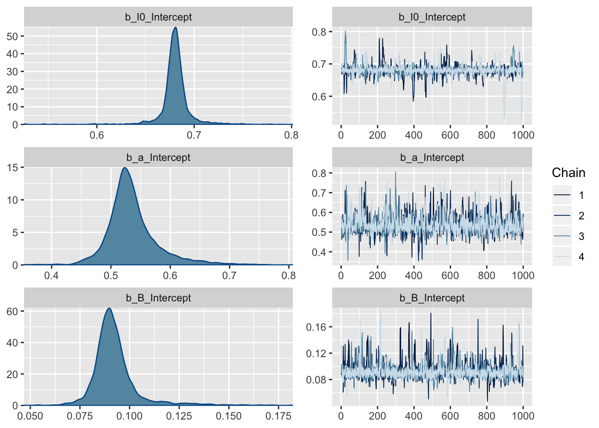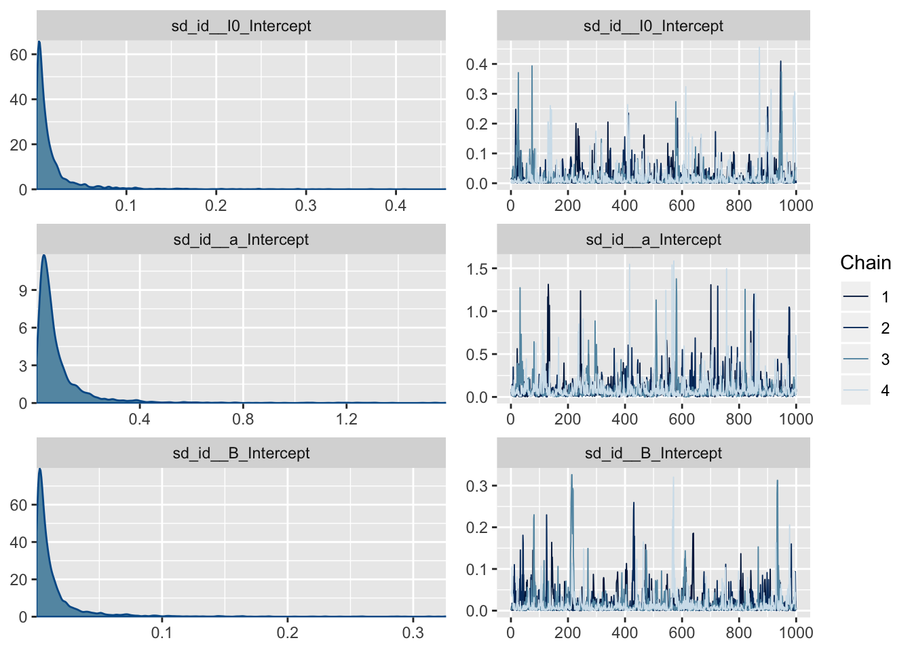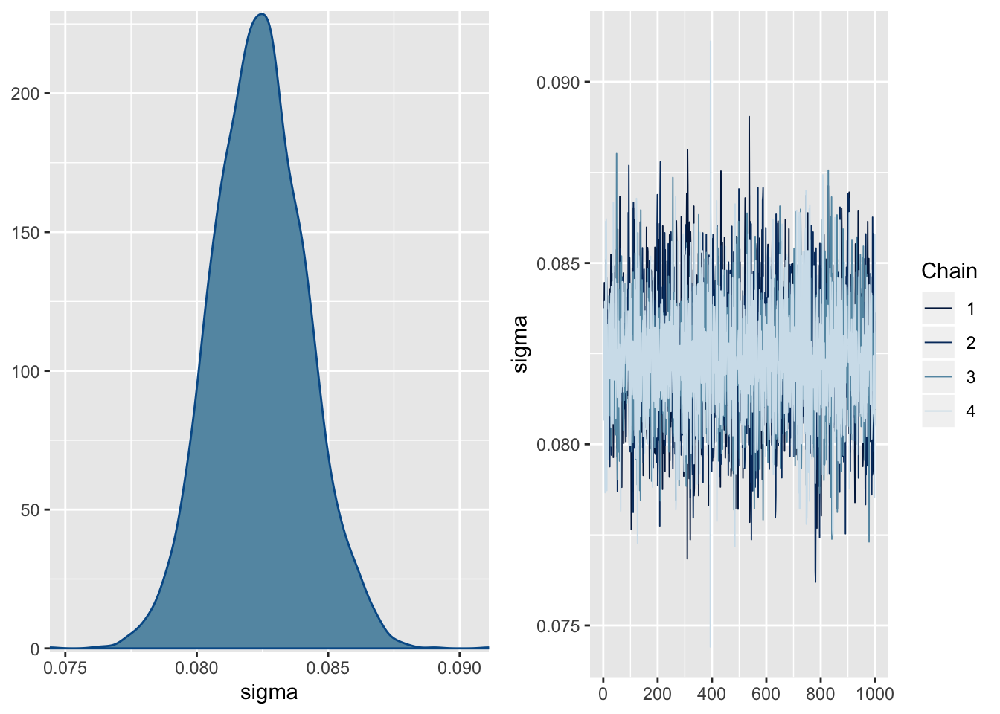
me_frap_model_50pct <- marginal_effects(
frap_model_50pct,
conditions = data.frame(id = c(1,2,3)),
re_formula = NULL, method = "predict"
)
plot(me_frap_model_50pct, points = T )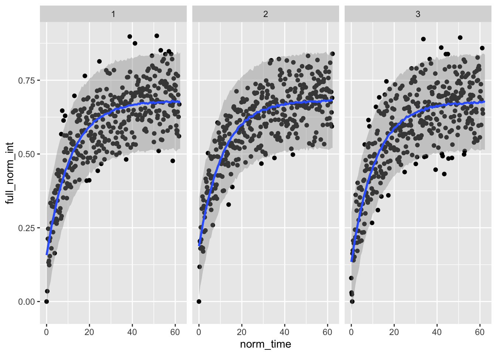
Comparing 4 conditions
Brms calls the hyperparameters ‘fixed effects’ and the lower hierarchical parameters ‘random effects’…therefore to get the table of hyperparameters you call fixef() and for the only the group effects you call ranef(), which gives you the difference from the population level (fixed effects). Then coef() gives you the actual estimate for the groups taking into account both levels of effects…I’m pretty sure I have this right :)
library(tidyverse)
frap_model_ests <- bind_rows(
as_tibble(fixef(frap_model_0pct),rownames = 'Term') %>% mutate(Condition = 0),
as_tibble(fixef(frap_model_10pct),rownames = 'Term') %>% mutate(Condition = 10),
as_tibble(fixef(frap_model_20pct),rownames = 'Term') %>% mutate(Condition = 20),
as_tibble(fixef(frap_model_50pct),rownames = 'Term') %>% mutate(Condition = 50)
)
ggplot(frap_model_ests, aes(x = factor(Condition), y = Estimate)) + geom_pointrange(aes(ymin = Q2.5, ymax = Q97.5)) + facet_wrap(~Term, scales = 'free')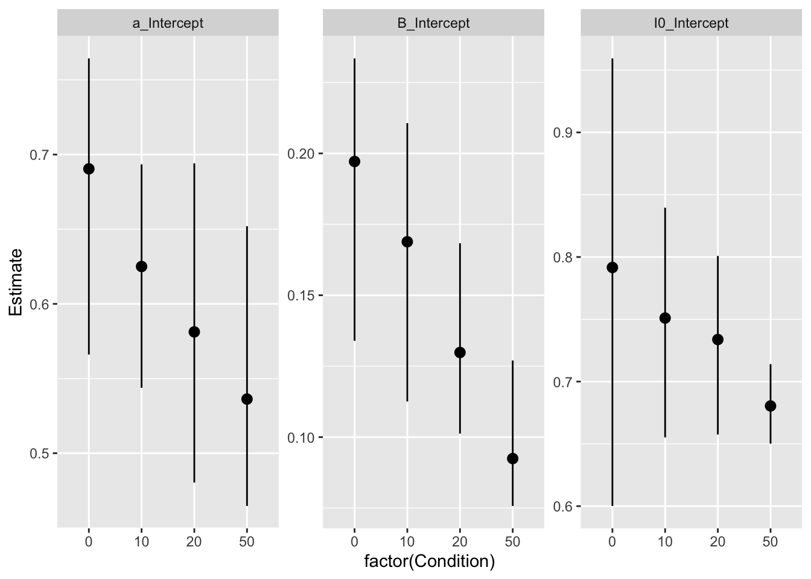
Let’s try to actually look at the posterior distributions here using tidybayes package.
library(tidybayes)
library(tidyverse)
library(brms)
library(ggridges)##
## Attaching package: 'ggridges'## The following object is masked from 'package:ggplot2':
##
## scale_discrete_manualget_variables(frap_model_0pct)## [1] "b_I0_Intercept" "b_a_Intercept"
## [3] "b_B_Intercept" "sd_id__I0_Intercept"
## [5] "sd_id__a_Intercept" "sd_id__B_Intercept"
## [7] "sigma" "r_id__I0[1,Intercept]"
## [9] "r_id__I0[2,Intercept]" "r_id__I0[3,Intercept]"
## [11] "r_id__a[1,Intercept]" "r_id__a[2,Intercept]"
## [13] "r_id__a[3,Intercept]" "r_id__B[1,Intercept]"
## [15] "r_id__B[2,Intercept]" "r_id__B[3,Intercept]"
## [17] "lp__" "accept_stat__"
## [19] "stepsize__" "treedepth__"
## [21] "n_leapfrog__" "divergent__"
## [23] "energy__"frap_model_dists <- bind_rows(
frap_model_0pct %>% spread_draws(b_B_Intercept) %>% mutate(Condition = 0),
frap_model_10pct %>% spread_draws(b_B_Intercept) %>% mutate(Condition = 10),
frap_model_20pct %>% spread_draws(b_B_Intercept) %>% mutate(Condition = 20),
frap_model_50pct %>% spread_draws(b_B_Intercept) %>% mutate(Condition = 50)
)
ggplot(frap_model_dists, aes(x = b_B_Intercept, y = factor(Condition))) + geom_halfeyeh()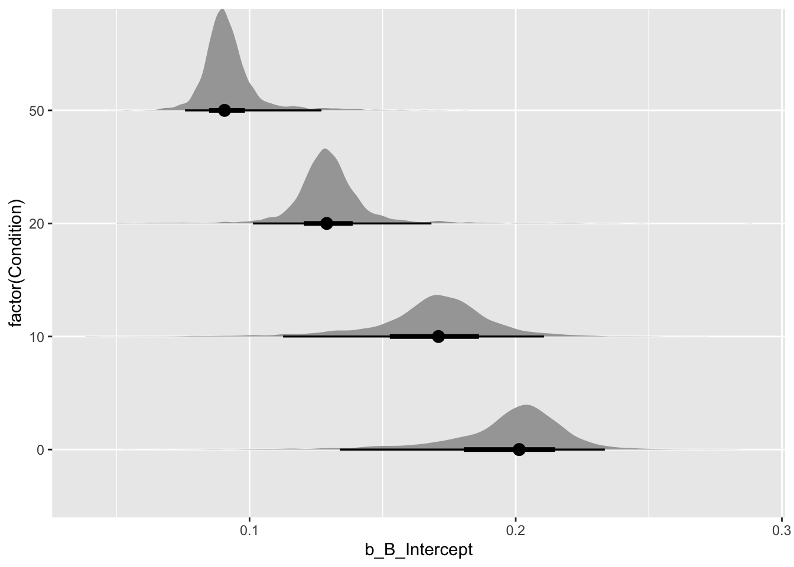
ggplot(frap_model_dists, aes(x = b_B_Intercept, y = factor(Condition))) + geom_density_ridges(quantile_lines = T,quantiles = c(0.025,0.1,0.5,0.9, 0.975), jittered_points = T, position = 'raincloud', point_alpha = 0.01)## Picking joint bandwidth of 0.00208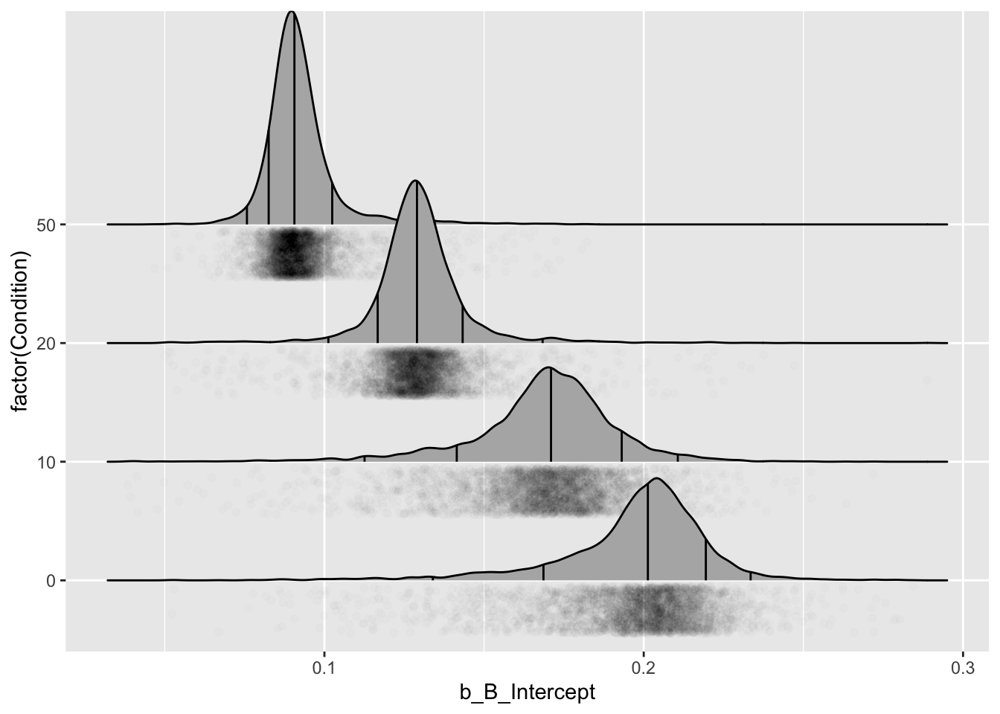
asld;kfj